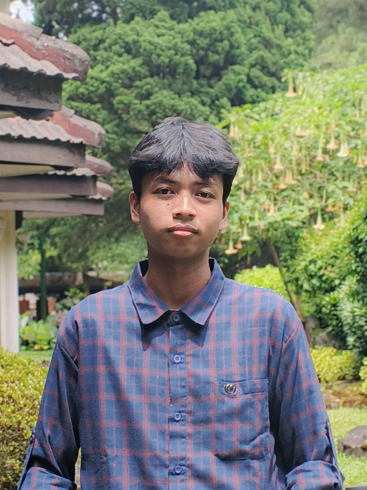

Halo, Saya
UI/UX Designer - Frontend Developer - Creative
Saya Ade Faisal lulusan SMK Assalaam Bandung jurusan Rekayasa Perangkat Lunak dengan fokus pada UI/UX dan Frontend Development. Berpengalaman dalam pembuatan tampilan website serta desain visual seperti poster dan konten digital. Memiliki kemampuan dalam menciptakan desain yang menarik, responsif, dan user-friendly, serta mampu bekerja sama dalam tim dan cepat beradaptasi dengan lingkungan baru.
Dari desain visual hingga kode, setiap karya dibuat dengan penuh dedikasi dan perhatian terhadap detail.